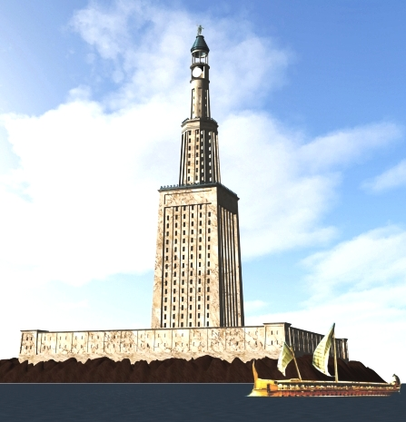

Pirâmide de Gizé
Localização: Cairo, Egito
Ano (aprox.): século XXV a.c
A Grande Pirâmide de Gizé, localizada no Egito Antigo, foi construída como túmulo do faraó Quéops e é a única das Sete Maravilhas do Mundo Antigo que ainda existe até hoje. Ficou conhecida por seu tamanho impressionante, precisão na construção e importância histórica, sendo considerada uma das maiores realizações da engenharia da antiguidade. Ao longo dos séculos, resistiu ao tempo e continua sendo um dos monumentos mais famosos do mundo.

Farol de Alexandria
Localização: Alexandria, Egito
Ano (aprox.): século III a.c
O Farol de Alexandria, localizado na cidade de Alexandria, no Egito Antigo, foi construído para orientar navegadores e facilitar a chegada de navios ao porto. Ficou conhecido por sua enorme altura e grandiosidade, sendo considerado uma das construções mais impressionantes da antiguidade. Ao longo do tempo, sofreu danos causados por terremotos e acabou sendo destruído, restando apenas registros históricos e vestígios de sua existência.
